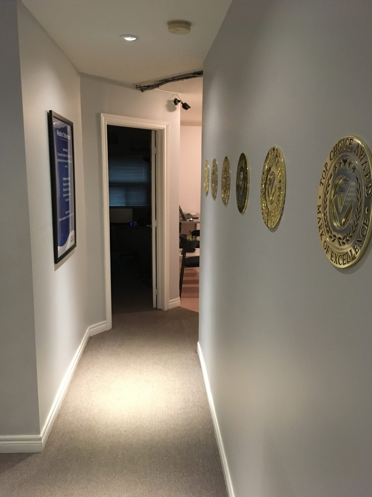
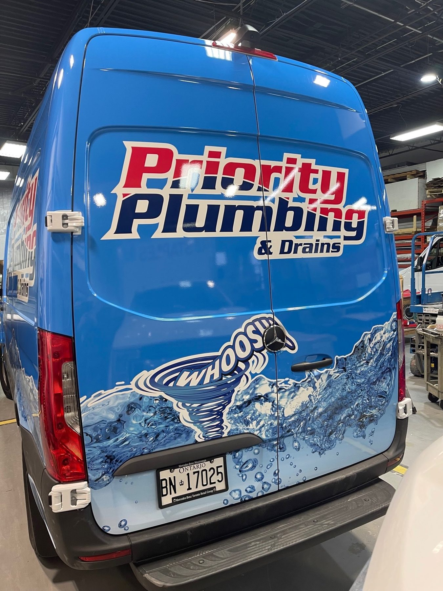
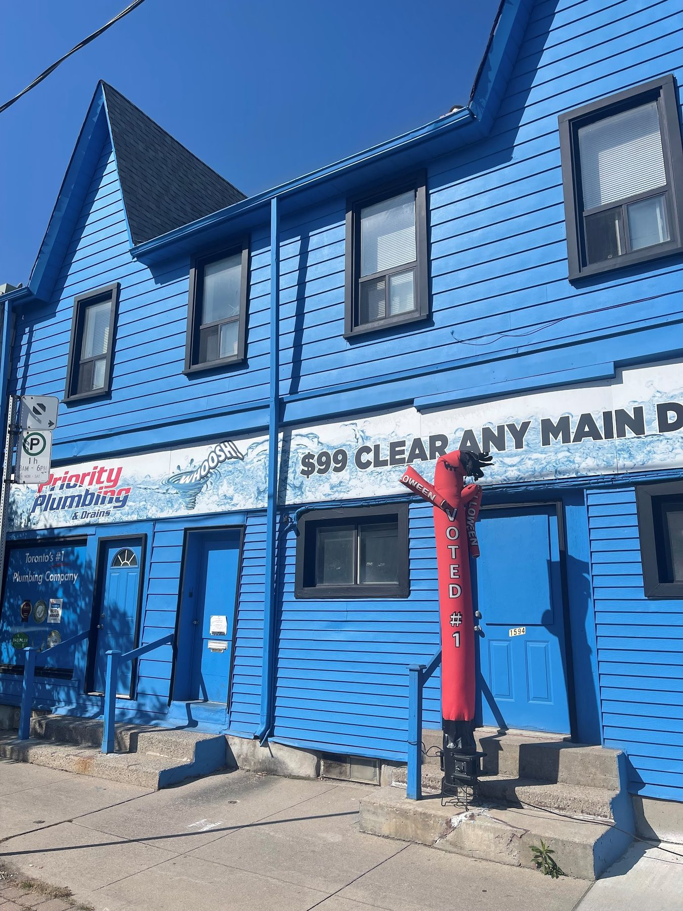
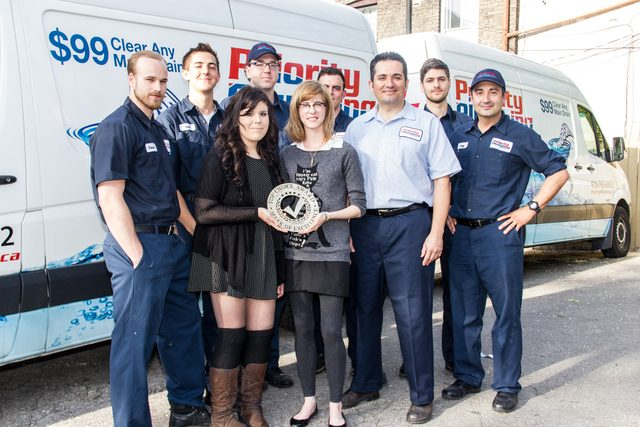

Problem solvers
No two houses are the same after decades of renovations. Our technicians are hired for critical thinking, because the plumbing behind the drywall rarely matches the textbook.
Home › About
Austin Tsakopoulos grew up in the trade and started Priority in 2001 with one complaint: plumbers who were great on a job site were terrible in people’s homes. The company exists to fix that.


Most independent plumbing shops close within five years. Their warranties go with them. Priority has been answering the same phone number since 2001.
The mission is simple: give homeowners extraordinary service, no matter how small the job, and raise the standard of the whole trade by doing it. Residential service is all we do. No construction crews, no renovation sidelines.
No two houses are the same after decades of renovations. Our technicians are hired for critical thinking, because the plumbing behind the drywall rarely matches the textbook.
A caring personality can’t be taught, so we screen for it. Hundreds of applicants are turned down every year; some go on to work for our competitors.
A licence is the start, not the finish. Our people know the fixture brands, the diagnostic tools and the old Toronto housing stock they work in every day.
Voted Toronto’s best plumbing company by customers. It’s painted on the vans for a reason.
Awarded on verified homeowner reviews.
When Toronto was in a plumbing crisis, CBC Radio turned to Priority for answers.
CityTV’s news team uses Priority as its trusted plumbing resource.





Greg and Victor lead the field team. The technicians customers mention most, by name, in their Google reviews:
ColeKyleTonyBrianBrendenAaronOuweisZacJacobJordan
Pick a time online or call. You get a text when your technician is on the way, a firm price at the door, and a cleaner house than we found it.